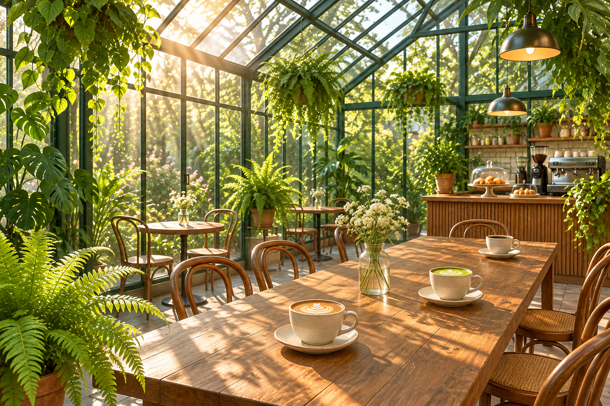

Menu
| Item | Type | Price |
|---|---|---|
| Fern Fog Latte | Drink | $5.25 |
| Greenhouse Whisk (hand-whisked matcha) | Drink | $5.75 |
| Sun Room Cold Brew | Drink | $4.75 |
| Moss Cloud Matcha Lemonade | Drink | $5.50 |
| House Drip Coffee | Drink | $3.25 |
| Terrarium Toast (seasonal fruit and herbed ricotta on sourdough) | Food | $8.50 |
| Fern Frond Scone | Food | $4.25 |
| Almond Croissant | Food | $4.50 |
Barista's Pick of the Week: Fern Fog Latte, $5.25

House Rules
- Phones go in the basket during Unplugged Hour in the Fern Room.
- Look, don't pick: our plants are residents, not samples.
- Share the long tables and keep voices low.